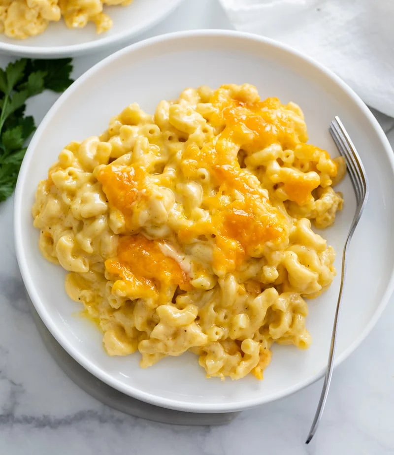

Mac and Cheese

Description:
Nothing beats a casserole dish filled with this creamy 3-cheese Baked Macaroni. This recipe ensures that there is absolutely no shortage of that delicious cheese sauce. (It’s amazing how much sauce the macaroni continues to absorb when it bakes, but this recipe completely factors that in.)
I love the combination of cheddar, gruyere, and gouda, but the cheese combinations are endless. Feel free to keep it simple and stick to cheddar, or add in as many additional cheese combinations as you want!
Ingredients:
- 1 lb. elbow macaroni
- 6 tablespoons butter
- 6 tablespoons flour
- 1 ½ cups heavy cream
- 2 ½ cups milk
- 1 teaspoon hot sauce
- 1 teaspoon mustard powder
- ½ teaspoon salt
- teaspoon each: onion powder, pepper
¼
- 3 cups shredded cheddar cheese
- 2 cups shredded Gruyere
- 1 cup shredded Gouda
- 9x13-inch casserole dish
Steps:
- Preheat oven to 325 degrees.
- Pro tip: Shred the cheese from a block. It will melt and taste much better than packaged shredded cheese. See notes for brand of cheese that I use.
- Prep Work: Shred the cheese and toss to combine. Reserve 2 cups for the top of the macaroni and use the remaining 4 cups for the cheese sauce. Measure out remaining ingredients before beginning.
- To Cook the Macaroni: Begin boiling salted pasta water for the macaroni while you prepare the cheese sauce. Add the pasta to the boiling water right around when you are letting the cream sauce reduce/thicken, before adding the cheese. Refer to the package and cook it for 1 minute less than al dente. Set a timer to avoid overcooking the macaroni.
- For the Cheese Sauce: Melt butter in a large pot over medium heat. Use a silicone spatula to stir in the flour. Continue to stir for 2 minutes, it should start to turn a light brown. Add the heavy cream/milk in small splashes, stirring continuously. (If you add it too quickly you’ll “break” the roux and the sauce will be thin.)
- Let it heat through and thicken while you boil the macaroni. Stir continuously during this time.
- Add the seasonings and hot sauce. Remove from heat.
- Gradually sprinkle in 4 cups of shredded cheese. Stir continuously until smooth and combined. If it seems too thick, add a splash of milk.
- Once the macaroni is cooked, drain it and add it to the warm pot you boiled it in. Pour the cheese sauce on top and stir to combine. Transfer to a lightly greased 9 x 13-inch casserole dish. Top with remaining 2 cups of cheese.
- Bake for 20 minutes. If desired, broil at 450 for 3 minutes to brown the top. Serve!